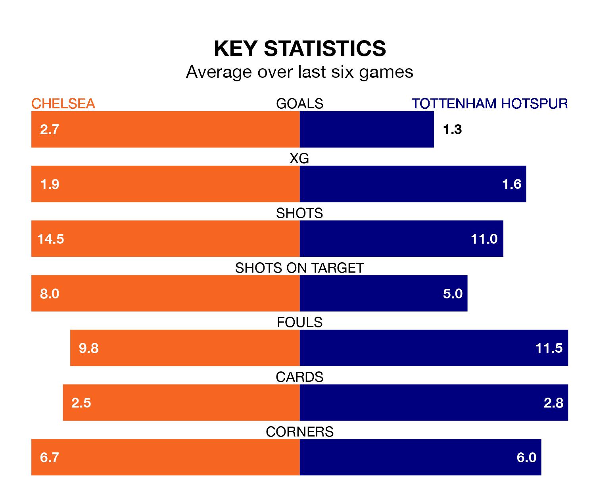

Tottenham Hotspur travel to Chelsea on late Thursday in the Premier League.
The visitors come into the game on the back of a defeat in their last match, having lost to Arsenal 3-2 at home, with goals from Heung-Min Son and Cristian Romero.
The Blues, meanwhile, drew their last match, 2-2 against Aston Villa, with their goals scored by Conor Gallagher and Noni Madueke.
With 67 goals in 33 games so far this season, Spurs are scoring more than average in the league with 2.0 goals per game. And they are conceding at an average rate, letting in 52 goals at a rate of 1.6 per game.
Chelsea are also above average scorers, with 1.9 goals per game, compared to a league average of 1.6. They have conceded 1.8 goals per game.
In the last 10 years, Chelsea and Spurs have played each other on 26 occasions. Chelsea won 15 of them, Spurs six, and they drew five times.
On average, the Blues scored 1.7 goals and Spurs 1.1 in those matches.
Their last meeting was on November 6, when Chelsea won 4-1 away.
Tottenham are fifth in the table after 33 games, of which they have won 18 and drawn six, earning 60 points.
The Blues are four places behind the away side in ninth, with 13 wins and nine draws putting them on 48 points.
In Son, Spurs have one of the league's sharpest shooters so far this season. He has notched 16 goals in 30 appearances, to sit seventh in the scoring charts.
His goal rate of one every 156 minutes is quicker than that of Nicolas Jackson, the hosts' top scorer with a goal every 236 minutes, and a total of 10 goals in 30 games.
Chelsea are in mixed form in the Premier League, with two wins and three draws from their last six games.
With two wins and a draw over that period, Spurs's form is slightly worse – they have taken seven points from 18, compared to Chelsea's nine.
Thursday's match will be refereed by Robert Jones, who has taken charge of 19 Premier League games so far this season, issuing five red cards and booking 89 players. He has awarded five penalties.
The last Chelsea game Jones refereed was a 2-2 away draw with Sheffield United on April 7. His last Spurs match was their 3-0 loss away at Fulham on March 16.
Updated: 12:00 (UTC), 02/05/24